Penrose Encoding and graph visualization.
Diana Itzel Vázquez Santiago.
Emmanuel Isaac Juárez Caballero.
Jesús Eduardo Hermosilla Díaz.
Maestría en Inteligencia Artificial, generación 2021-2023
Introducción:
Las Máquinas de Turing fueron propuestas por el matemático Alan Turing en 1936, son dispositivos computacionales abstractos capaces de simular la lógica de cualquier algoritmo, lo cual las convierte en una poderosa herramienta matemática para ayudar a investigar el alcance y las limitaciones de lo que se puede calcular. Desde su propuesta, las Maquinas de Turing han marcado su importancia como el modelo de computación más utilizado en las ciencias de la computación y la teoría de la complejidad.
En términos generales, las Maquinas de Turing están conformadas por cintas infinitas con representaciones binarias y un diagrama de estados o lista de instrucciones que determinaran el comportamiento de la máquina, en cada paso el estado actual y el símbolo leído en la cinta determinaran el siguiente estado, el símbolo que se emitirá en la cinta y la dirección a la cual se moverá el cabezal (derecha o izquierda).
La limitante principal de las Maquinas de Turing es que precisamente, como se mencionó previamente, simulan un cálculo especifico, por lo que para cada nuevo cálculo que se quiera simular es necesario construir una maquina diferente, sin embargo, es posible codificar la lista de instrucciones de cualquier máquina de Turing en una cadena y construir una máquina de Turing que espere en su cinta una cadena que describa una lista de instrucciones, seguida de una cadena que describa la cinta de entrada, y compute la cinta que la Máquina de Turing codificada habría computado, esta Máquina de Turing capaz de emular el comportamiento de cualquier otra Máquina de Turing es conocida como la Maquina de Turing Universal.
Si bien la cinta infinita que usan las Maquinas de Turing ya tiene una representación binaria, es necesaria una codificación que permita a la maquina distinguir entre espacios, instrucciones, números, etc. Distintos autores han propuesto sus codificaciones para lidiar con este problema, uno de ellos es Roger Penrose que propone una serie de equivalencias para lograr una codificación simple y eficiente.
En este proyecto se presenta la codificación de Penrose aplicada a un número m con notación decimal que representará las instrucciones de la 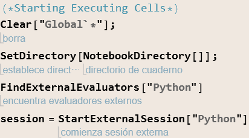-ésima Máquina de Turing, para posteriormente construir el diagrama de estados de dicha Máquina y el comportamiento que tendrá dado un número de entrada.
Marco Teórico:
En 1936 y de manera independiente fueron publicados tres artículos; “Finite Combinatory Processes—Formulation 1” por Emil Post y que da origen a la máquina de POST, “An Unsolvable Problem of Elementary Number Theory” por Alonzo Church el cual formula el cálculo 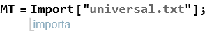 y “On computable numbers, with an application to the Entscheidungsproblem” por Alan Turing que da origen a las máquinas de Turing.
En esencia la máquina de Post publicada por Emil Post y la máquina de Turing son equivalentes, de igual manera la máquina de Turing y el cálculo 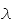 de Church son equivalentes.
La propuesta hecha por Turing es similar a los autómatas finitos pero con una memoria ilimitada y sin restricciones. En este sentido la máquina de Turing es un modelo de cómputo general, las máquinas de Turing pueden llevar a cabo las mismas operaciones que una computadora real, sin embargo, esto no implica que todos los problemas puedan ser resueltos por una máquina de Turing.
Cinco años antes de que la propuesta de Turing fuese publicada, K. Göedel (1931) probó su teorema de incompletitud, el cual se puede entender como la no existencia de una teoría matemática que pueda ser enteramente demostrable, es decir, que sea demostrable a partir de algo que no fuesen supuestos.
Formalmente esto se dice según Göedel como:
“Para toda fórmula A de la lógica cuantificacional de primer orden, si A es lógicamente verdadera, entonces A es deducible”. Dicho formalmente: “Si ╞ A, entonces ├ A”
Esto está intrínsecamente relacionado con lo propuesto por Church/Turing, pues en sus trabajos ellos proponen que las máquinas de Turing solo son capaces de computar funciones recursivamente numerables.
Una máquina de Turing consiste de un control finito que puede estar en cualquier estado de un conjunto finito de estados. El modelo propuesto por Turing usa una cinta infinita como método de almacenamiento (memoria); tiene un cabezal, el cual puede leer, escribir y moverse a lo largo de la cinta.
Inicialmente la cinta contiene únicamente una cadena de entrada, si la máquina necesita guardar información escribirá sobre la cinta. Para poder acceder a la información la máquina puede mover su cabezal. La máquina continua con el proceso de computación asta que decide producir una salida, las salidas de aceptación y de rechazo son obtenidas a partir del diseño de los mismos, por otro lado, si no se tiene una opción donde la máquina tenga un estado de aceptación o rechazo la máquina seguirá computando para siempre, es decir sin parar.
Algo importante a considerar es las diferencias que presenta con respecto a los autómatas finitos.
- Una máquina de Turing puede escribir sobre la cinta y leer a partir de ella.
- El proceso de lecto-escritura puede llevarse a cabo moviéndose a la izquierda o a la derecha.
- La cinta es infinita.
- Los estados de aceptación o rechazo toman efecto de manera inmediata.
Formalmente, una máquina de Turing es una 7-tupla 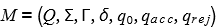 son cojuntos finitos y:
- 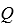 es el conjunto de estados,
- 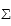 es la entrada del alfabeto la cual no contiene a ,
- es la cinta del alfabeto, donde 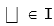 y 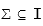,
- 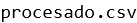es la función de transición,
- 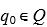 es el estado inicial,
- 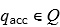 es el estado de aceptación, y
- es el estado de rechazo, y en donde se debe cumplir que: 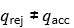.
* Un aspecto importante a considerar es que en general la función de transición actúa sobre 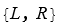, sin embargo, puede determinarse que para una máquina de Turing que tenga algoritmo soluble en un tiempo finito la función de transición actuará sobre 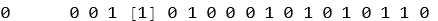 donde 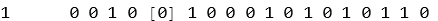 denota el valor a partir del cual la máquina se detiene, es decir, 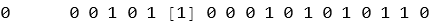 “generará” estados de la forma 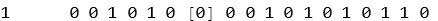.
Pese a que la representación anterior es sumamente útil para llevar a cabo el cómputo, una representación alternativa es propuesta por Penrose , en donde, de manera similar a lo descrito anteriormente describe a la máquina de Turing como un dispositivo orientado a la realización del cómputo en general compuesto por una cinta, un cabezal y la transición de derecha a izquierda. En este caso se propone una cinta sobre la cual el cabezal se moverá, esta estará conformada por casillas “rellenas” de 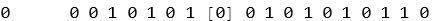, en este caso el 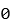 denota una casilla en blanco y el 1 como las casillas no vacías.
Un aspecto importante a considerar es que los estados que componen a la máquina han de ser tales que sean finitos, de manera que el comportamiento de la máquina de Turing estará completamente determinado por un estado interno y la entrada de la cinta, misma que como se mencionó previamente está compuesta únicamente de 0’s y 1’s.
En particular hemos de decir que siempre comenzaremos en el estado 0 y la cinta siempre deberá moverse a la derecha, esto por las razones expuestas previamente. A partir de aquí el comportamiento de la máquina de Turing será completamente determinado por las transiciones/reglas que determinan la misma.
Es posible asociar un estado de la máquina de Turing a un número natural (Considérese que 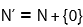), bajo esta conversión podemos realizar un mapeo en un sistema numérico equivalente. El sistema binario nos servirá para llevar a cabo la codificación de los elementos de la cinta, esto es fácilmente visible si se toma en cuenta que la codificación de la cinta está compuesta por 0’s y 1’s. Las razones por las que la cinta está codificada en binario en lugar de algún otro sistema como el unario recae en el hecho del tamaño de memoria, pese a que para números pequeños el sistema unario es muy eficaz en números grandes el sistema binario es más compacto.
Un aspecto importante a considerar es que en el proceso descrito por Penrose para llevar a cabo la codificación se considera una “variante” del binario, la cual es descrita como _binario_ extendido. El procedimiento para convertir una salida de binario a binario extendido es sencillo, se siguen las reglas: “, → 110”, “0 → 1”, “1→10”
En la codificación de Penrose es posible codificar a los estados que componen a una máquina de Turing de la siguiente manera:
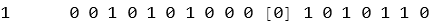
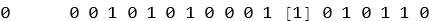
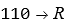
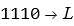
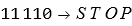
A este proceso podemos llamarle traducción de la máquina de Turing o Codificación de Penrose, pese a que las razones de esta codificación no han sido descritas formalmente aquí es posible advertir que el resultado de estas nos darán una estructura de grafo, similar a la propuesta inicialmente con la definición formal de máquina de Turing.
Podemos resumir lo descrito previamente en una serie de pasos:
* Consideremos a un conjunto de valores 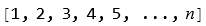 que representen los estados finitos de la cinta.
* Podemos referirnos a los valores como instrucciones/operaciones, en donde la coma solo denota el espacio entre los números.
La codificación para denotar a los números se hace en binario considerando que “,→110”,0→1”, “110”, de manera que el proceso de escritura en binario expandido sería mediante la lectura de los valores en binario y mediante el uso de las sustituciones previas.
* Una condición importante es que los ceros iniciales a la izquierda son reduntantes, pues no expresan ningún valor en la codificación individual de cada número.
De esta manera es posible expresar a los elementos de la máquina de Turing en una codificación más compacta y legible pues ahora el funcionamiento de una máquina de Turing estará descrito por un conjunto finito de instrucciones.
La máquina de Turing Universal.
La forma de describir una máquina de Turing universal o UTM por sus siglas en inglés es en principio simple, su funcionamiento consiste en traducir una lista de instrucciones de una máquina de Turing arbitraria a una cadena de 0’s y 1’s representadas en una cinta. La cinta es entonces usada como la parte inicial de alguna entrada para alguna máquina de Turing, la cual es llamada UTM. La máquina de Turing es un mimetizador universal, la parte inicial de la cinta provee a la UTM de toda la información que necesita para imitar cualquier máquina de Turing 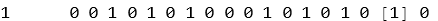 de manera exacta.
Para verificar su funcionamiento es importante tener en claro como se lleva a cabo el proceso sistemático de numeración de las máquinas de Turing. El proceso de decodificación se hace tomando en cuenta el proceso inverso a la codificación, considerando una salvedad, la introducción de unos caracteres de inicio y fin, los cuales están determinados por “110 → ,” y que se puede considerar únicamente como elementos que separan a los números que deben ser leídos. Por consiguiente se adopta la codificación:
para 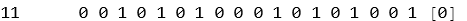 ó ,
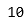 para 1 ó  ,
,
 para 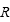,
para 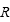,
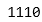 para 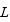,
 para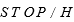
para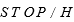
Bajo este procedimiento es posible etiquetar a las máquinas de Turing, en particular las primeras 13 son:

Ahora, es posible considerar la acción de una máquina de Turing  en alguna cadena finita de 0’s y 1’s sobre una cinta la cual siempre alimentemos a la derecha, misma que como se discutió previamente debe estar codificada en binario extendido. Si la cinta generada de la máquina 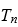 eventualmente se detiene la cadena de números binarios que se ha producido es la respuesta al cálculo que realiza la máquina de Turing , dicho de otra manera:
en alguna cadena finita de 0’s y 1’s sobre una cinta la cual siempre alimentemos a la derecha, misma que como se discutió previamente debe estar codificada en binario extendido. Si la cinta generada de la máquina 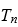 eventualmente se detiene la cadena de números binarios que se ha producido es la respuesta al cálculo que realiza la máquina de Turing , dicho de otra manera:
Una cinta de instrucciones finitas con paro conduce a la computación de la máquina de Turing sobre algún valor numérico, es decir: 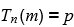.
En resumen,la máquina será codificada en una cinta que recibirá como entrada un número m y tendrá como salida un número .
Por ejemplo, considérese el caso en donde 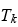 es la máquina de Turing que calcula el valor del cuadrado de un número, se tendrá que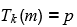con 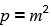.
En particular en este trabajo se implementarán las máquinas de Turing 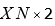 y la máquina de Turing 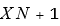 las cuales corresponden en la codificación de números naturales a la máquinas 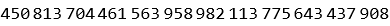 y 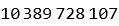 respectivamente.
En general, la máquina de Turing Universal se puede escribir formalmente como:
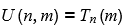 es decir, la máquina de Turing es una máquina que recibe dos entradas, que corresponde al número de la máquina de Turing por mimetizar y 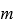, el número sobre el cual la máquina de Turing debe computar.
Sin embargo, como se ha descrito previamente la máquina de Turing universal es un mimetizador universal, la pregunta es, ¿existe una máquina de Turing que mimetice el comportamiento de la máquina universal?, la respuesta es sí el número 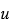 que genera la máquina 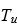.
Metodología
Penrose codification
Para obtener la codificación de Penrose se escribió un programa en python que genera un archivo csv con los elementos necesarios para generar nuestras máquinas de Turing. El algoritmo recibe como entrada un número entero m y devuelve como salida la lista de instrucciones necesarias para aplicar la máquina a un número n.
Con este propósito se definen dos funciones auxiliares con el propósito de convertir a m en un número binario.
def decimal2binary(dec_number):
input_binary = bin(dec_number).replace(“0b”, “”)
TM_binary = str(‘110’) + input_binary + str(‘110’)
return TM_binary
def even_or_odd(number):
if number % 2 == 0:
return 0
else:
return 1
Finalmente, se crea la función principal, en ella se aplica sistemáticamente las equivalencias propuestas por Penrose para generar la codificación correspondiente así como las instrucciones implicadas.
def Penrose_coding(number):
output=[]
binary_number = decimal2binary(number)
TM_list = [int(x) for x in (binary_number)]
current_state = 0
count_state = 0
new_state = []
TM_decode = []
fail = False
while len(TM_list)!=0:
bin_current_state =bin(current_state).replace(“0b”,””)
bin_new_input = even_or_odd(count_state)
if (TM_list[0] == 0) & (len(TM_list) >= 1):
TM_decode.append(0)
new_state.append(0)
del TM_list[0]
elif (TM_list[0] == 1) & (TM_list[1] == 0) & (len(TM_list) >= 2):
TM_decode.append(1)
new_state.append(1)
del TM_list[0:2]
elif (TM_list[0] == 1) & (TM_list[1] == 1) & (TM_list[2] == 0) & (len(TM_list) >= 3):
TM_decode.append(‘R’)
if (len(new_state) == 0):
new_state.append(0)
new_state.append(0)
elif (len(new_state)==1): new_state = [0] + new_state
output.append(str(bin_current_state) + str(bin_new_input) + ‘ -> ‘ + ‘’.join(str(x) for x in new_state) + ‘R’)
count_state = count_state + 1
new_state.clear()
del TM_list[0:3]
if (even_or_odd(count_state) == 0):
current_state = current_state + 1
elif (TM_list[0] == 1) & (TM_list[1] == 1) & (TM_list[2] == 1) & (TM_list[3] == 0) & (len(TM_list) >= 4):
TM_decode.append(‘L’)
if (len(new_state) == 0):
new_state.append(0)
new_state.append(0)
elif (len(new_state)==1): new_state = [0] + new_state
output.append(str(bin_current_state) + str(bin_new_input) + ‘ -> ‘ + ‘’.join(str(x) for x in new_state) + ‘L’)
count_state = count_state + 1
new_state.clear()
del TM_list[0:4]
if (even_or_odd(count_state) == 0):
current_state = current_state + 1
elif (TM_list[0] == 1) & (TM_list[1] == 1) & (TM_list[2] == 1) & (TM_list[3] == 1) & (TM_list[4] == 0) & (len(TM_list) >= 5):
TM_decode.append(‘H’)
if (len(new_state) == 0):
new_state.append(0)
new_state.append(0)
elif (len(new_state)==1): new_state = [0] + new_state
output.append(str(bin_current_state) + str(bin_new_input) + ‘ -> ‘ + ‘’.join(str(x) for x in new_state) + ‘H’)
count_state = count_state + 1
new_state.clear()
del TM_list[0:5]
if (even_or_odd(count_state) == 0):
current_state = current_state + 1
else:
fail = True
a=str(bin_current_state) + str(bin_new_input) + ‘ -> ‘ + ‘’.join(str(x) for x in new_state) + ‘?’
output.append(a)
break
TM_decode_str = [str(x) for x in (TM_decode)]
return binary_number, TM_decode_str, fail, output
Resultados-1: Grafos y listas de instrucciones de la máquina de Turing Universal, la máquina de Turing XN+1 y la máquina de Turing XN*2
Grafo de la máquina universal de Turing.
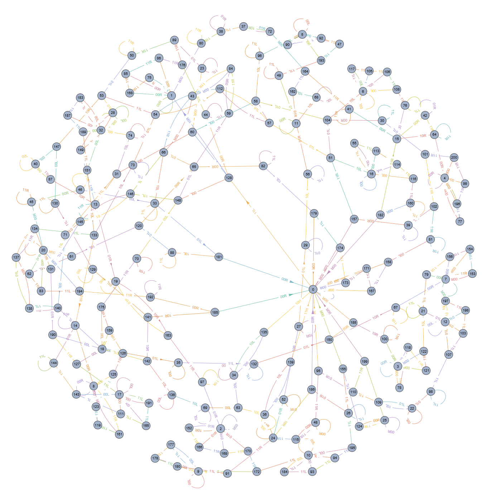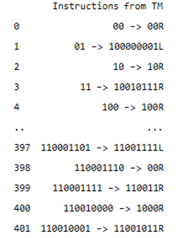
Grafo de la máquina XN+1
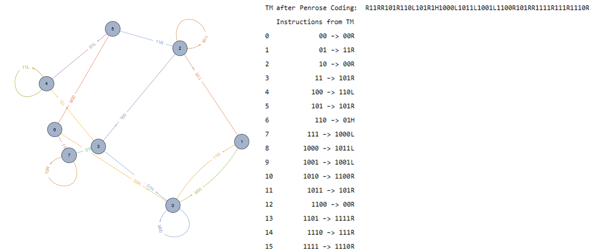
Grafo de la máquina XN*2
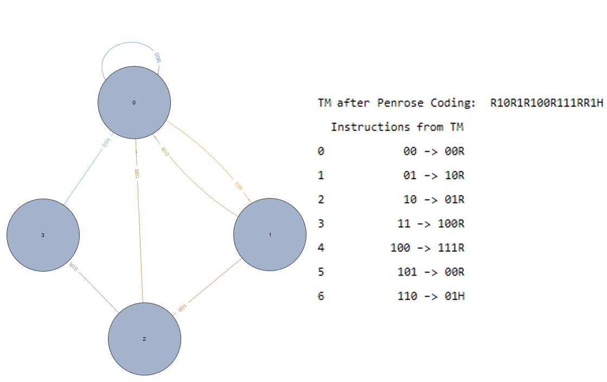
Resultados-2: Pruebas de ejecución de la máquina de Turing XN+1 y XN*2 a partir de la máquina de Turing Universal.
Ejecución de la máquina de Turing XN+1 para la entrada para m=2
El resultado de la máquina de Turing es la última línea mostrada a la derecha, esta se encuentra en la codificación del binario extendido, se muestra a la derecha el resultado de la decodificación mostrando el resultado correcto, correspondiente a 3.
Ejecución de la máquina de Turing XN*2 para la entrada para m=3
El resultado de la máquina de Turing es la última línea mostrada a la derecha, esta se encuentra en la codificación del binario extendido, se muestra a la derecha el resultado de la decodificación mostrando el resultado correcto, correspondiente a 6.
Conclusiones:
En este proyecto se presentó un programa que muestra visualmente el funcionamiento de las Máquinas de Turing y la codificación de Penrose con su equivalente diagrama de estados. Se puede ver claramente que en el caso de las Máquinas de Turing XN+1 y XN*2 que fueron las pruebas ejecutadas, los resultados obtenidos fueron correctos al adicionar o multiplicar las entradas dadas a cada máquina, de igual manera esto se debió a la correcta implementación de la codificación de Penrose en la cinta.
Ejecución de la libreta:
Celdas de inicialización
Ejecución del código de python para la codificación de Penrose.
Pre procesamiento de las reglas para la construcción de la codificación de Penrose.
Visualización usando Multigraph2 con elementos modificados, originalmente fue modificado a partir de:(https://mathematica.stackexchange.com/questions/201183/how-to-get-distinct-labels-on-parallel-edges-in-a-graph)
Integración de MultiGraph2 implementation: Una herramienta para visualizar grafos en Wolfram Mathematica (de manera default no se pueden construir gráficos con múltiples etiquetas).
Generación de la tabla de asociaciones para modificar el conjunto para usar multigraph2
Visualización de los gráficos usando el enredado de Gravity, un método para visualizar más claramente el grafo.
Imágenes para las primeras 12 máquinas de Turing
Visualización de las primeras 12 máquinas de Turing
Pre procesamiento de los datos con el motivo de ejecutar la compilación de la máquina universal de Turing, implementado en Python 3.

Ejecución de la máquina de Turing: Solo ejecutar si se sabe que la máquina eventualmente se detiene.
Formato posible para la visualización de las máquinas de Turing.